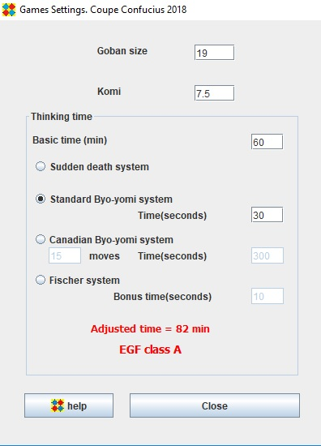

Games Options
The informations in this frame is used to export results for rating lists

You can choose between 4 time systems.
- Sudden death
Basic time and no additional time
- Standard Byo-yomi
Basic time and additional time for each move
- Canadian Byo-yomi
Basic time and additional time for each series of moves
- Fisher
Bonus time is added to the credit of the player after each move, starting from the first move of the game.
EGF classes
Depending on the time settings, OpenGotha computes the class (A, B, C, or no class) according to EGF rules.
EGF recognizes three tournament categories:
- class A -
well organised tournament recognised by an EGF member
time limit requirements: adjusted time minimum 75 minutes,
basic time minimum 60 minutes (45 for Fischer)
weight for inclusion to EGF ratings: 1.00
In addition tournaments with handicaps in the top bar are not included in class A.
- class B -
well organized tournament recognized by an EGF member
time limit requirements: adjusted time minimum 50 minutes, basic
time minimum 40 minutes (30 for Fischer)
weight for inclusion to EGF ratings: 0.75
- class C -
casual or club tournament recognized by an EGF member
time limit requirements: adjusted time minimum 30 minutes, basic
time minimum 25 minutes (20 for Fischer)
weight for inclusion to EGF ratings: 0.50
Adjusted time:
is calculated as:
- Sudden death - basic time.
- Standard byoyomi - basic time + time equivalent to 45 moves.
e.g.: basic time: 60 minutes, byoyomi: 30 seconds per move:
60 + (45 x 30") = 82.5 minutes
- Canadian byoyomi - basic time + time equivalent to 60 moves.
e.g.: basic time: 75 minutes, byoyomi: 12 moves in 5 minutes:
75 + (60 x (5 / 12)) = 100 minutes
- Fischer - basic time + bonus time equivalent to 120 moves.
e.g.: basic time: 45 minutes, bonus per move: 15 seconds:
45 + (120 x 15") = 75 minutes
Sudden death - implying adjusted time = basic time - is acceptable,
provided all other criteria are met.